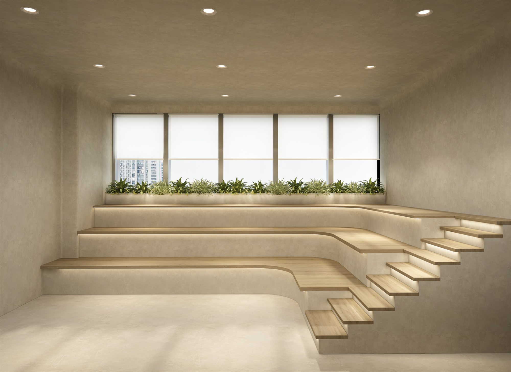
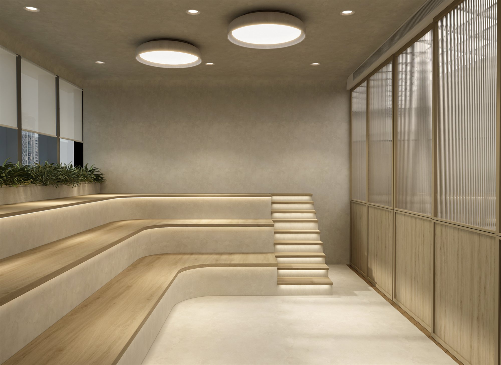

Work / 01 · Professional
Shrimad Rajchandra Mission
Interiors for a spiritual and community centre in Mulund, Mumbai: places to wait, meditate, learn and practise.

- Type
- Interior design, independent commission
- Year
- 2025
- Status
- Completed
- Client
- Shrimad Rajchandra Mission, Mulund centre
- Location
- Mulund, Mumbai
- Spaces
- Lounge and reception, meditation and waiting area, children's class, conference room, yoga room
- Images
- Design visualisations
An independent commission for the Mulund centre of Shrimad Rajchandra Mission. The brief brought several programmes onto one floor: a welcoming lounge and reception, a quiet meditation and waiting area, a classroom for children, a conference room that doubles as a classroom, and a yoga room.
The palette stays calm and consistent from room to room: light oak in herringbone floors and fluted panels, softly textured walls, sage-green upholstery and cabinetry, and warm cove and recessed lighting. Built-in joinery keeps storage out of sight, so each space stays uncluttered and easy to reconfigure.
01Lounge and reception
Visitors arrive at a reception desk set against a textured wall, with soft seating in sage green, low ottomans and a library wall of open shelves around it.


02Meditation and waiting
Stepped seating, lit from beneath each tread, turns the waiting area into a small amphitheatre for quiet sitting and informal talks, with planting along the window.




03Children's class
For the "Divine Touch" class: child-height tables, floor cushions, tactile play walls and generous closed storage, so the room can move between lessons, play and group sitting.


04Conference room and yoga room
A modular table layout lets the conference room work for meetings or as a classroom, with shelving and a screen wall. In the yoga room, aerial yoga hammocks hang above floor mats in a timber-lined space.